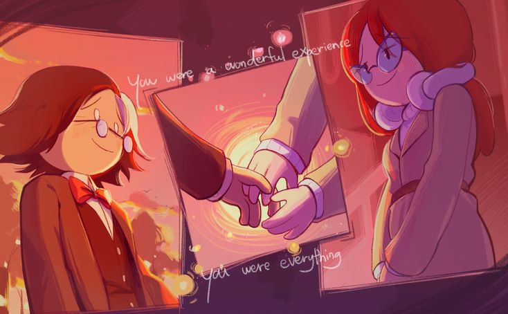

Tal vez en otro universo no fui un completo idiota. Le diría a la antigua Ximena que sufrió por la inmadurez de mi antiguo yo, que me ayudó a evolucionar en lo que soy ahora. Tu ausencia y los problemas que tuve me hicieron recapacitar, y cada día intento ser la versión que esa Ximena se merecía. Unas palabras de disculpa no son suficientes, y sé que el perdón no se pide, se gana. Quiero ganarme tu perdón. En otro universo en el que siguiéramos juntos, te compraría todo lo que estuviera a mi alcance, te adoraría, estaría más tiempo a tu lado y te diría que te amo, disfrutaría cada momento contigo. Ahora, lo que pienso en esta realidad es que no me cuesta nada seguirte amando en silencio y dejarte ser feliz con quien realmente amas; quiero que seas feliz, sin importar si estoy o no. Amo tu rostro, amo tu voz, y cuando haces una pequeña pausa para reírte con delicadeza. Amo tu fuerza para seguir adelante a pesar de que pases por malos momentos. Amo tu inteligencia; podré estudiar y aprender un poco de todo, pero siempre me consideraré inferior a tu inteligencia y tu grandeza es algo que yo apenas puedo imitar. Te quiero mucho xime
Título
Artista